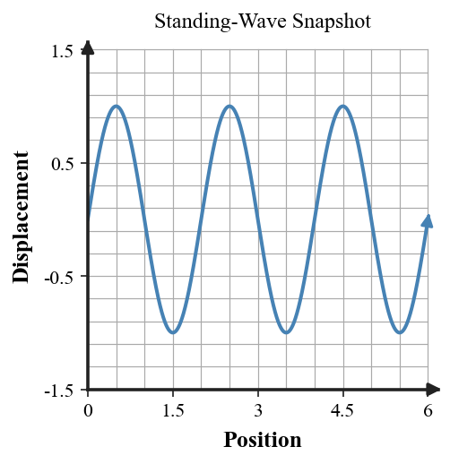
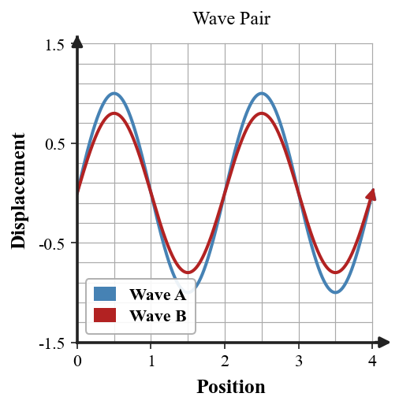
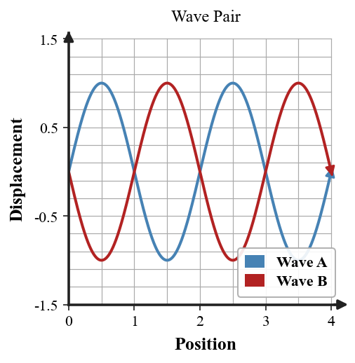

Practice focus: Explain constructive and destructive interference, standing waves, and the Doppler effect using wave models and evidence.
Concept check during the wave-interaction model review: Analyze the standing-wave snapshot graph to identify how many interior zero-displacement points are shown. Answer as if you were checking another student’s model.

Concept check during the wave-interaction model review: Select the locations of maximum oscillation in a standing-wave pattern. Answer as if you were checking another student’s model.
Concept check during the wave-interaction model review: Without copying a glossary, explain destructive interference. Answer as if you were checking another student’s model.
Concept check during the wave-interaction model review: For a receding source, state whether wavefronts arrive more often or less often. Answer as if you were checking another student’s model.
Concept check during the wave-interaction model review: Give the term that fits the wave pattern that has fixed nodes and antinodes. Answer as if you were checking another student’s model.
Concept check during the wave-interaction model review: Place into the correct category: a crest and equal-size trough meeting at the same location as constructive or destructive interference. Answer as if you were checking another student’s model.
Concept check during the wave-interaction model review: Without copying a glossary, explain constructive interference. Answer as if you were checking another student’s model.
Concept check during the wave-interaction model review: For an approaching source, state whether observed frequency is higher or lower than for the same stationary source. Answer as if you were checking another student’s model.
Concept check during the wave-interaction model review: Select the points of zero displacement in a standing-wave pattern. Answer as if you were checking another student’s model.
Concept check during the wave-interaction model review: Place into the correct category: two matching crests meeting at the same location as constructive or destructive interference. Answer as if you were checking another student’s model.
Concept check during the wave-interaction model review: Provide the principle used to find the resulting displacement when waves overlap. Answer as if you were checking another student’s model.
Concept check during the wave-interaction model review: Give the term that fits the effect in which observed frequency changes because source and observer move relative to one another. Answer as if you were checking another student’s model.
Independent practice — wave-interaction model review: A rope is driven at a frequency that produces a stable standing-wave pattern. Explain how the fixed nodes provide evidence that the pattern is not simply one pulse traveling down the rope. Interpret the result in the situation, not just as a number.
Independent practice — wave-interaction model review: A source moves toward an observer. Use wavefront spacing to explain whether observed wavelength in front is shorter or longer. Interpret the result in the situation, not just as a number.
Independent practice — wave-interaction model review: Analyze the graph to determine whether the two component waves are mostly in phase or out of phase, then name the interference type. Interpret the result in the situation, not just as a number.

Independent practice — wave-interaction model review: Two pulses overlap with displacements +4 cm and +3 cm. Find the resultant displacement and classify the interaction at that instant. Interpret the result in the situation, not just as a number.
Independent practice — wave-interaction model review: Two equal pulses approach one another on a rope. Describe what happens while they overlap and what happens after they pass through each other. Interpret the result in the situation, not just as a number.
Independent practice — wave-interaction model review: Evaluate the difference between the constructive- and destructive-interference graphs. Describe one feature that distinguishes the two cases. Interpret the result in the situation, not just as a number.
Independent practice — wave-interaction model review: At one point, Wave A has displacement $+5$ cm and Wave B has displacement $-4$ cm. Determine the resultant displacement by superposition. Interpret the result in the situation, not just as a number.
Independent practice — wave-interaction model review: A stationary observer hears a moving siren. Identify which is changing for the observer: source frequency, observed frequency, or both in the basic Doppler model. Interpret the result in the situation, not just as a number.
Independent practice — wave-interaction model review: A standing wave has four loops between fixed ends. Identify the number of antinodes and describe where nodes occur. Interpret the result in the situation, not just as a number.
Independent practice — wave-interaction model review: Two pulses overlap with displacements +4 cm and -4 cm. Find the resultant displacement and state the condition for complete cancellation. Interpret the result in the situation, not just as a number.
Independent practice — wave-interaction model review: Analyze the graph to determine whether the two component waves would reinforce or cancel when added. Interpret the result in the situation, not just as a number.

Independent practice — wave-interaction model review: A source moves away from an observer. Predict how the observed frequency changes and connect the prediction to wavefront arrival rate. Interpret the result in the situation, not just as a number.
Model critique — wave-interaction model review: Connect a standing-wave diagram to the idea of interference: explain how nodes and antinodes can result from overlapping waves traveling in opposite directions. Finish with a corrected physics statement.
Model critique — wave-interaction model review: Justify why a siren sounds higher-pitched as it approaches and lower-pitched after it passes. Use wavefront spacing and observed frequency, not a change in the siren’s own driving frequency. Finish with a corrected physics statement.
Model critique — wave-interaction model review: A peer reviewer says any two waves that overlap must cancel. Critique the claim by comparing constructive, destructive, and partial interference. Finish with a corrected physics statement.
Model critique — wave-interaction model review: A peer reviewer says two waves “bounce off each other” when they meet. Correct the explanation using superposition and describe what the waves do after overlapping. Finish with a corrected physics statement.
Transfer challenge — wave-interaction model review: A class creates a standing-wave pattern on a string. Design an evidence-based procedure for deciding whether a new pattern is truly standing rather than a traveling pulse. Specify what to observe or measure and how the evidence supports your conclusion. Defend the model or design and identify what evidence would strengthen it.
Transfer challenge — wave-interaction model review: A peer reviewer claims the Doppler effect happens because a moving siren physically changes the frequency it produces. Evaluate the claim and build a corrected model using source motion, wavefront spacing, observed frequency, and relative motion. Defend the model or design and identify what evidence would strengthen it.